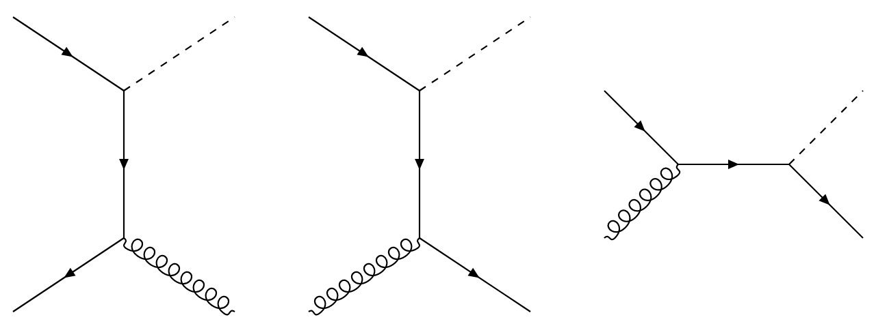
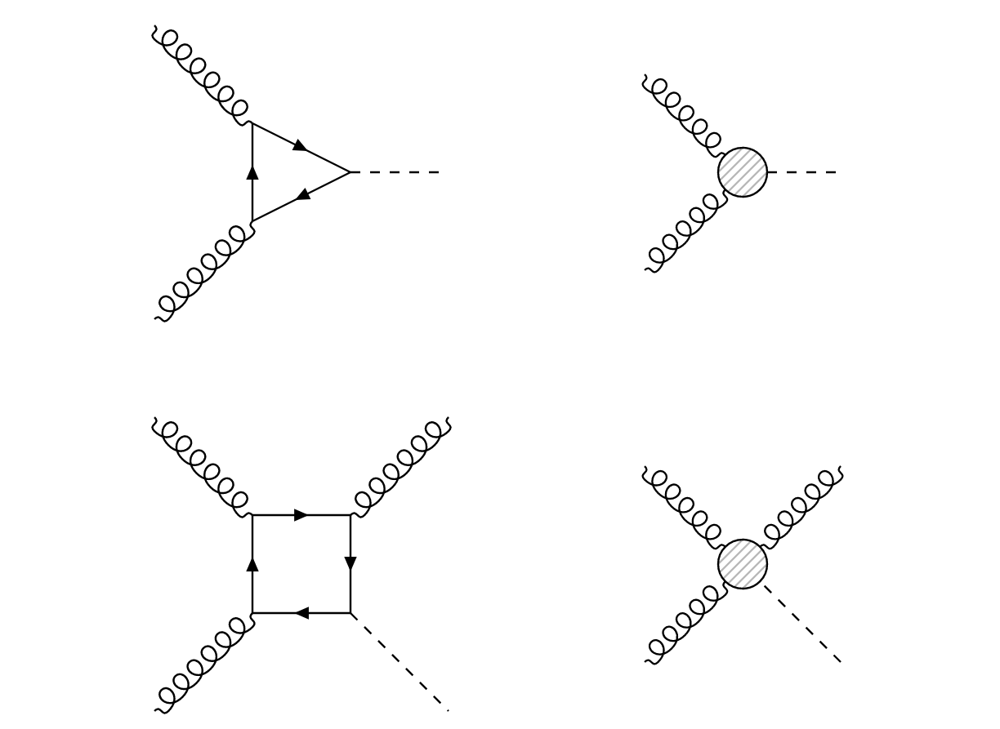
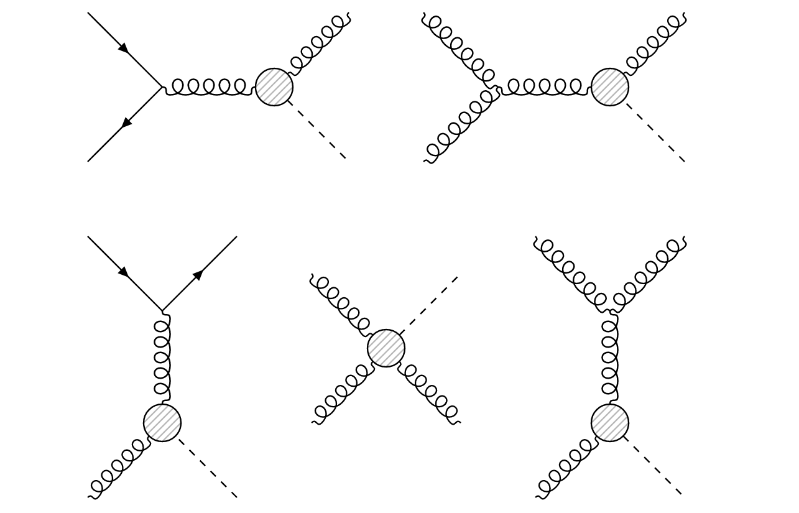

Leading order Higgs plus jet
1. Flavour contributions
1.1 Leading order diagrams
In MadGraph, you can easily define the leading order signal using the following commands:
MG5_aMC> generate p p > h j
This command generates the Feynman diagrams that contribute to this process. The following diagrams are generated at leading order:

If we are working in the five flavour (5F) scheme and if the model parameters allow for non-zero light quark Yukawa couplings, then in principle each flavour apart from the top can appear in these diagrams. A generator-level simulation of 10,000 events yields the following results:
| Process (including antiquark contribution) | [pb] | |
|---|---|---|
| 0.52 | 62.1% | |
| 0.23 | 27.8% | |
| 8.45 | 10.1% | |
| 3.76 | 0.05% | |
| 2.89 | <0.1% | |
| 8.83 | <0.1% |
In the channel, the dominant contribution comes from bottom quarks. The contribution from the light quarks () is negligible. Essentially, a leading order Higgs plus jet sample would mainly consist of bottom jets, followed by gluon and finally charm jets.
1.2 Effective coupling
In the previous section, we discussed only the tree-level diagrams contributing to . There is however another family of diagrams which will contribute heavily to the Higgs plus jet cross section. All of these diagrams are mediated by a coupling, which incorporates a quark triangle loop:

On the right, the loop has been replaced by an effective vertex, which in practice amounts to integrating out the dominant top quark contribution. If we include this coupling, then the following diagrams become physical:

In MadGraph, these effective vertices are included in the Higgs Effective Theory model. The new family of diagrams contributing to can be generated using the command
MG5_aMC> generate p p > h j HIG==1
In this command, we specify that only diagrams with a coupling order HIG exactly equal to 1 should be generated, i.e. the diagrams with a single vertex. If we only simulate the diagrams which contain such a vertex, we obtain the following flavour distributions:
| Process (including antiquark contribution) | [pb] | |
|---|---|---|
| 10.62 | 74.62% | |
| 0.18 | 1.28% | |
| 0.27 | 1.92% | |
| 0.32 | 2.27% | |
| 1.08 | 7.66% | |
| 1.61 | 11.42% |
This time, the light flavours seem to have a significant contribution to the Higgs plus jet cross section. This is because there is no dependence on the Yukawa coupling to weigh down the processes where the Higgs boson appears with a light quark. The up and down quarks are now the dominant quark contributions since they have a high amplitude in the proton PDF. The same reasoning applies to the bottom and charm quark contributions, where the roles have now been reversed: For these diagrams, the charm quark is predicted to appear half again as often as the bottom quark.
1.3 Total leading order cross section
If we now simulate every diagram contributing to (including the ones with a coupling), then we obtain the following results:
| Process (including antiquark contributihon) | [pb] | |
|---|---|---|
| 10.62 | 71.32% | |
| 0.70 | 4.70% | |
| 0.33 | 2.22% | |
| 0.32 | 2.15% | |
| 1.08 | 7.25% | |
| 1.61 | 10.81% |